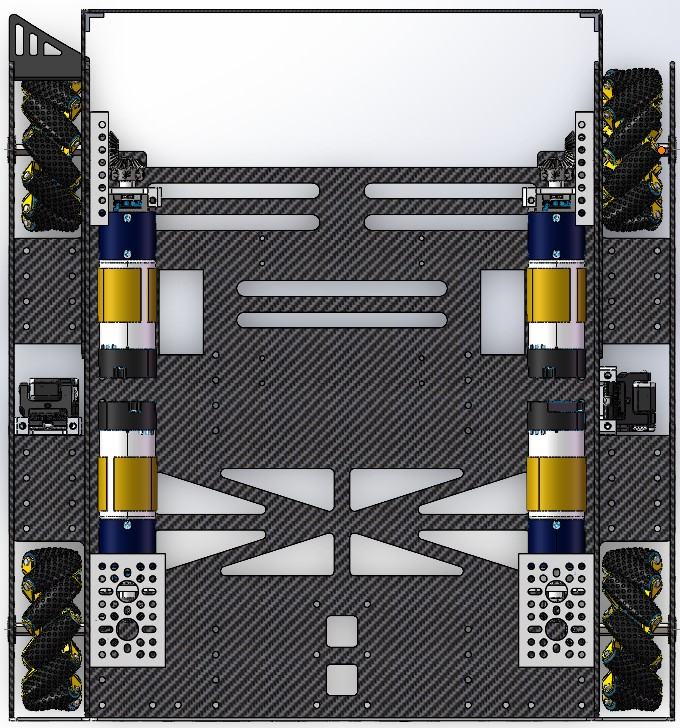

01 吸
滚筒加皮筋
2000 rpm 的滚筒，靠皮筋的离心力把遗物压进去，单球 0.3 秒。
2000 rpm 的滚筒，靠皮筋的离心力把遗物压进去，单球 0.3 秒。
左右不对称的导流件，避免两颗球同时卡在入口。
一个舵机推动同步轮，近投远投随时切换。
最后十几秒的基地任务靠它，拆装不用工具。
| 项目 | 数值 |
|---|---|
| 整车尺寸 | 451 × 422 × 346 mm（长 × 宽 × 高） |
| 整车质量 | 10.8 kg |
| 最大速度 | 2.3 m/s |
| 底盘 | 5 块碳纤维侧板，4 × goBILDA 435 rpm，自制 90° 换向齿轮箱 |
| 轮组 | 4 个 4 寸麦轮（Ø101 mm），离地 15 mm |
| 定位 | PinPoint × 1 + 从动轮 × 2，配 RoadRunner |
| 吸入 | 2000 rpm，Ø70 × 312 mm，单球 ≤0.3 s |
| 发射 | 单飞轮 Ø72 mm / 675 g，6000 rpm，初速约 12 m/s，仰角可调 |
| 自动 | 单场 12 球，设计目标成功率 90% 以上 |
底盘是 5 块碳板加 4 个 goBILDA 麦轮。电机没有直接怼在轮子上，而是走自制齿轮箱转 90°，把中间那块空间让出来给遗物存储。
定位是 1 个 PinPoint 加 2 个从动轮，三个矢量交给 RoadRunner。这套东西第一年就调通了，自动能打满 12 球。

最早只有一个固定仰角的单飞轮，只能近投。后来用一个舵机带同步轮，把 3D 打印件推出去，做出仰角可调，远投近投随时换。
飞轮从软换到硬，外面套 30 度硅胶环，里面夹 6 块不锈钢配重板，压住连发时的掉速。初速约 12 m/s。


单飞轮固定仰角，只能近投；软飞轮连发掉速明显。第一版把吸、传、发、升串起来跑通。
硬飞轮 + 硅胶环 + 6 块配重；加仰角可调、加 Limelight 自动瞄准；吸入入口加宽，容错提高。
电池电压一掉，固定功率发射的落点就变。我们测了 0.8 到 1.0 五档功率在不同电压下的转速，发现两者近似线性，于是改成按转速差微调功率：P 取 0.0001，通常 20 次左右收敛。
手动阶段要反复去发射区。第一次发射成功后记下位置，之后从场上任意位置一键回去，操作手不用自己找点。
发射通道里加了光线传感器：第一颗到位就让 Transmit220 停转，避免把球顶出去。
| 场次 | 我方联盟 | 对手 | 比分 | 结果 |
|---|---|---|---|---|
| Q4 | 24667 · 31167 | 19603 · 30613 | 193 : 107 | 胜 |
| Q12 | 24667 · 19583 | 27570 · 19859 | 138 : 98 | 胜 |
| Q17 | 24667 · 31715 | 9755 · 19877 | 137 : 72 | 胜 |
| Q27 | 24667 · 28660 | 23845 · 19914 | 142 : 133 | 胜 |
| Q42 | 24667 · 19913 | 24005 · 31971 | 152 : 116 | 胜 |
| Q47 | 24667 · 21981 | 19660 · 28042 | 167 : 83 | 胜 |
淘汰赛：上区 R2 胜 19705 / 9755，上区 R4 负 24599 / 19859，下区 R5 胜 19705 / 9755，决赛 144 : 169 负 24599 / 19859。2 号种子联盟队长，获 Finalist Alliance Captain。
| 场次 | 我方联盟 | 对手 | 比分 | 结果 |
|---|---|---|---|---|
| Q1 | 24667 · 19705 | 12527 · 19683 | 203 : 184 | 胜 |
| Q12 | 24667 · 32534 | 19613 · 16095 | 277 : 189 | 胜 |
| Q21 | 24667 · 32528 | 19581 · 23267 | 240 : 182 | 胜 |
| Q32 | 24667 · 28660 | 32537 · 27570 | 150 : 207 | 负 |
| Q40 | 24667 · 20106 | 32237 · 19682 | 211 : 126 | 胜 |
| Q45 | 24667 · 19759 | 19914 · 30753 | 173 : 69 | 胜 |
淘汰赛：上区 R1 负 20106 / 25787，下区 R3 负 32528 / 12527。5 号种子联盟队长，获 Think Award 第二名。
| 场次 | 我方联盟 | 对手 | 比分 | 结果 |
|---|---|---|---|---|
| Q5 | 24667 · 24306 | 12527 · 32008 | 212 : 245 | 负 |
| Q14 | 24667 · 19859 | 31715 · 19965 | 381 : 122 | 胜 |
| Q21 | 24667 · 22389 | 19681 · 19601 | 255 : 259 | 负 |
| Q30 | 24667 · 19606 | 22406 · 32009 | 278 : 231 | 胜 |
| Q33 | 24667 · 19683 | 27501 · 24567 | 245 : 237 | 胜 |
| Q43 | 24667 · 23845 | 32333 · 19660 | 264 : 207 | 胜 |
排位第 12，未进入联盟选择，没有淘汰赛。获中国总决赛 Reach Award。
练操作：怎么开关程序、切程序、用工作站。4 名队员分两组各跑两次，分数 80、89、90、87，暴露的问题是距离判断不准、两名操作手配合不默契。
看自动阶段的不同方案：功率低了投不进，高了球会转出来；球吸进去却到不了位。手动阶段讲手柄，A 手柄前后左右加旋转、X 停飞轮、上排键四档功率，B 手柄上左吸取。
为硬度把亚克力板全换成碳纤维板。讨论自动阶段的装球颜色策略（当时还不能自动识别）。升降结构做成快拆式，为的是比赛中换状态更快。
学电钻和攻丝：丝锥先蘸油、打孔要垂直、打完清铁屑。了解了 Java 程序框架。讨论升降结构的板怎么固定在杆上，最后用空心圆柱加胶水、螺丝竖打撑开。
吴老师演示了机器人，讲了最远投掷区精度和抛物线角度不够的问题，还有收集装置转速、球序没法调换、电池不够用和机身抖动。新队员第一次上手底盘。